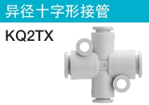
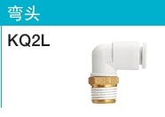
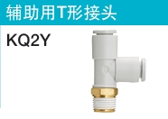
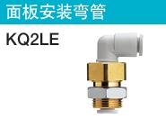

选型功能区
直通接管 (H)
异径直通接管 (H)
接管弯头 (L)
插管弯管 (L)
插管减径弯管 (L)
双管弯头 (LU)
长插管弯管 (W)
T形接管 (T)
异径T形接管 (T)
十字形接管 (TW)

异径十字形接管 (TX)
异径十字形接管 (TY)
两管垂直接管 (D)
Y形接管 (U)
插管Y形接管 (U)
异径Y形接管 (U)
异径四管Y形接管 (UD)
插管异径Y形接管 (X)
插管减径接管 (R)
插管四管Y形接管 (XD)
 直通接头 (H)
直通接头 (H)

弯头 (L)
双管弯头 (LU)
内螺纹弯头 (LF)
双管万向弯头 (Z)
带内外螺纹的双管万向弯头 (ZF)
两个双管万向弯头 (ZD)
三个双管万向弯头 (ZT)
双管T形接头 (T)
两管垂直接头 (D)
Y形接头 (U)
Y形接头四管 (UD)
带内六角直通接头 (S)
内螺纹直通接头 (F)
45°弯头 (K)
万向弯头 (V)
带内外螺纹的万向接头 (VS)
内螺纹弯头 (VF)
两个单管万向弯头 (VD)
三个单管万向弯头 (VT)
加长弯头 (W)

辅助用T形接头 (Y)

面板安装弯管 (LE)
插管接头 (N)
面板安装直通接管 (E)
面板安装内螺纹直通接管 (E)
选型结果
请完成所有选型参数后点击"开始选型"按钮
使用注意事项
- 利用本软件选定的产品及计算结果可能与实际情况不同。
- 使用本软件收录的产品之前，请务必详细阅读该产品样本上记载的【安全注意事项】、【通用注意事项】、【产品个别注意事项】以及【产品规格】。
- SMC可能在不通知的情况下对本软件的内容及收录产品的规格进行变更。
- 对于客户，SMC对使用本软件选出的产品、计算结果的正确性、软件的品质不作任何保证。
- 使用本软件造成的损失，SMC不负任何责任。
浏览器要求
- Google Chrome 90.0 以上
- Microsoft Edge 91 以上
- Safari 14.0 以上
- Mozilla Firefox 89.0 以上